网格划分
创建项目
默认下一步
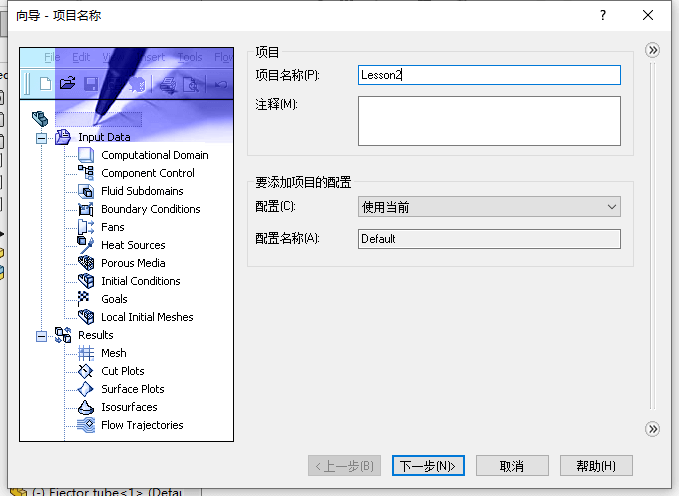
默认下一步
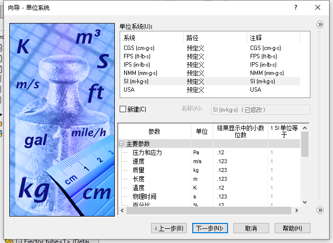
选择内部分析，默认下一步
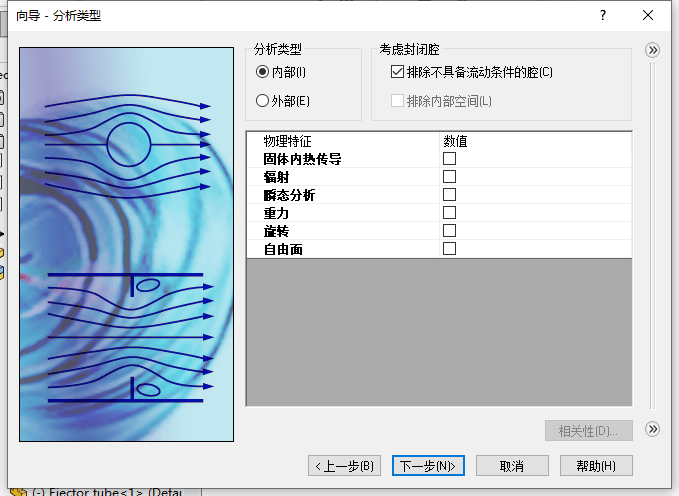
双击选择空气做为流动的介质，默认下一步
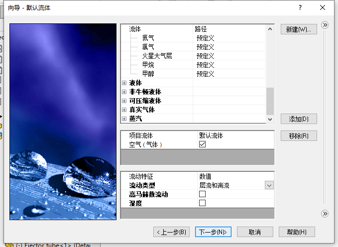
默认下一步
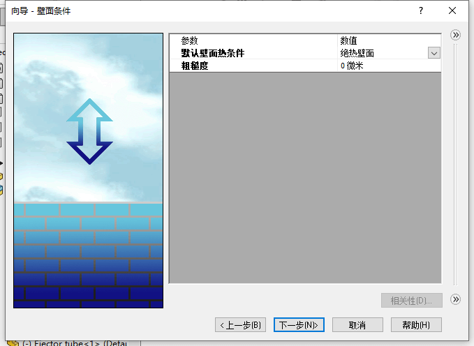
默认下一步，完成流体项目创建
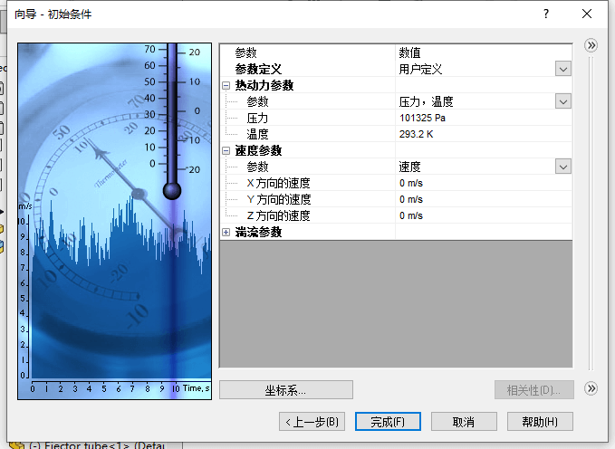
边界条件
设置入口环境压力为1个大气压
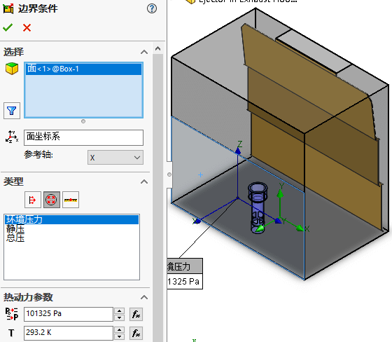
入口
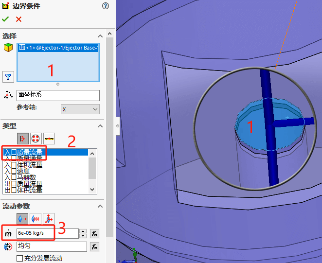
出口
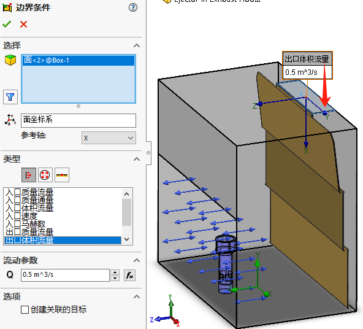
划分网格
基础网格：
流体分析在划分默认网格时，回使用基础网格。此时的网格不会区分结果形状，只将计算区域进行等单元的划分。称基础网格
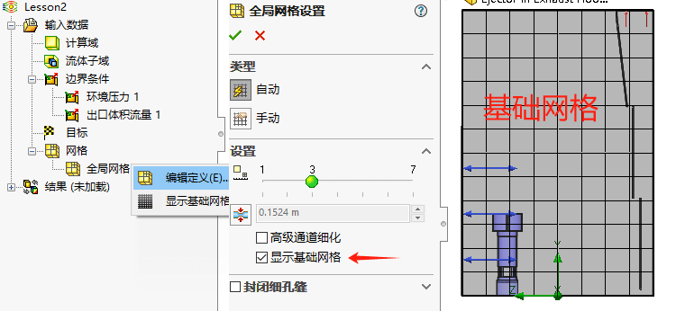
初始网格：
通过【运行-网格】只启动网格划分计算
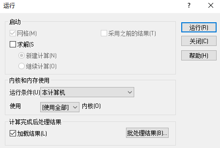
通过设置【结果-切面图】，来查看网格划分情况。
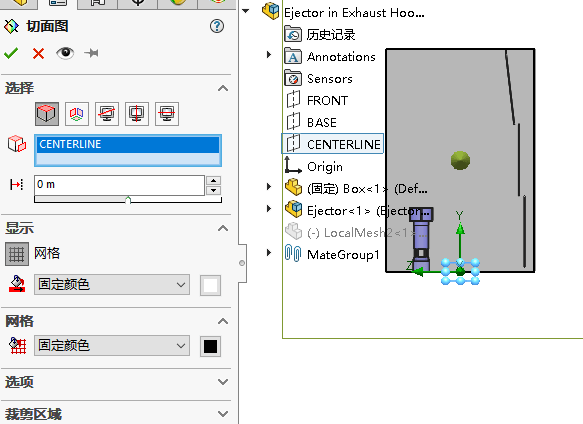
查看网格截面的【切面图】，可以看到，在一些特殊结构位置模型网格回进行默认细化的处理。（这里是按自动的方式生成）
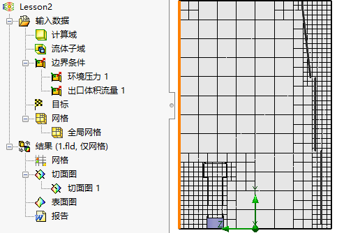
我们还可以控制全局网格精度，进行调整。但是这里是按模型实体特征进行网格精度划分的结果，这将会造成非必要部分网格也进行了细化（造成非必要的计算）
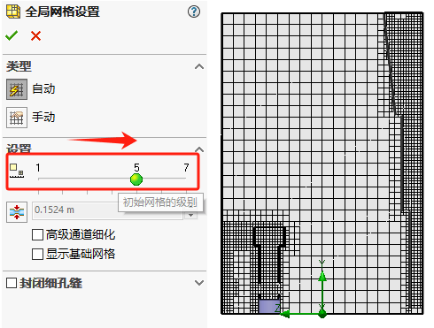
局部网格
按模型实体全局进行细化，不太满足计算要求。
插入局部网格
因此，我们将考虑使用局部初始网格，在右键【网格-插入局部网格】
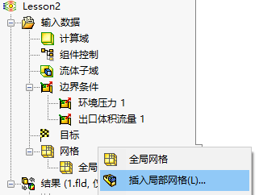
使用模型局部的面，进行局部的细化
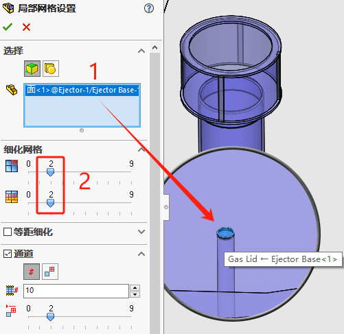
单单只对小面进行加密是效果不明显的，
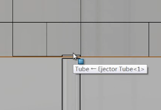
因为周边网格粗糙，过渡到局部细化网格时，大小差距不能大于2。局部细化是一个过渡的过程，并不会相邻的网格细化不会差别很大。
因此，我们需考虑先将一部分计算域网格细化，在其中再进行局部细化
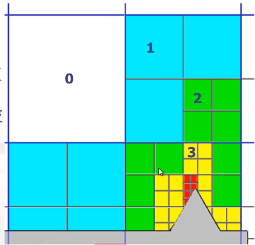
实体局部细化
添加区域的实体，来局部控制该区域的网格细化
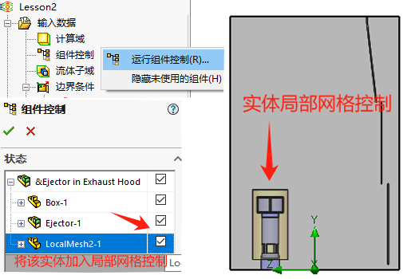
插入该实体的【局部网格设置】
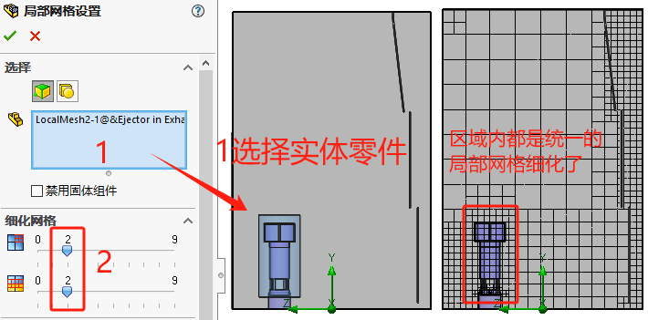
控制平面
然后我们检查入口处的网格情况，发现现在是已经细化，但是网格划分不算对称。
对于回转体等对象结构，对称的网格回有利于仿真结果的准确。因此，我们需要考虑将网格添加【控制平面】使得，网格从控制平面中心对称划分。
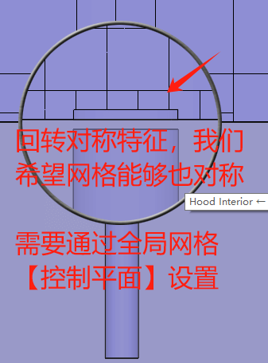
从【全局网格-手动-控制平面】进入其便捷界面，然后找到Z方向面，输入“0.2143425”m（这个数值是刚好过入口圆柱的中心距离值，实际情况会需要我们提前做好测量得到）。
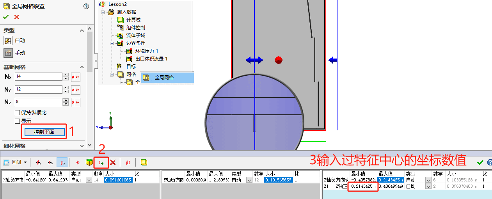
求解网格
现在需要细化的位置就是对称的了，
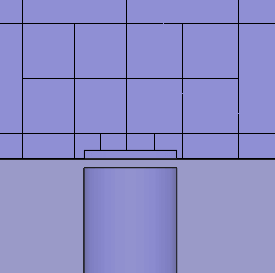
你还可以在【结果-切面图】查看其他方向的网格是否对称，按需要重复其他坐标的操作。
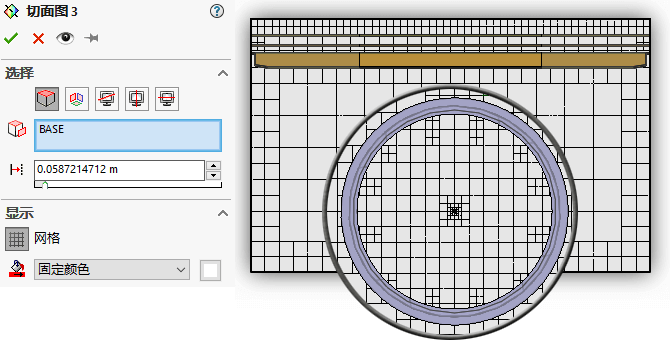
计算结果
查看切面图
查看迹线
补充
网格类型
根据计算域自动生成的立方体网格，形状是平行和正交于全局坐标系轴线的基准面
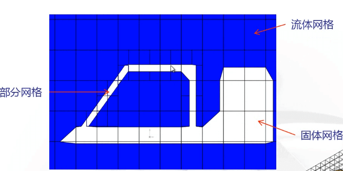
手动细化
细小特征细化
细小固体特征细化等级=1（左）
已经探测到水平狭长圆柱体，但由于等级较低无法捕捉这一圆柱体。
细小固体特征细化等级=4（右）
水平圆柱体已经被细化。注意，网格仅仅细化了国柱体所在的区域。
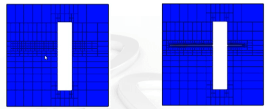
曲面细化
曲线细化等级=0，不细化网格。
曲面细化等级=1，使用部分网格进行细化
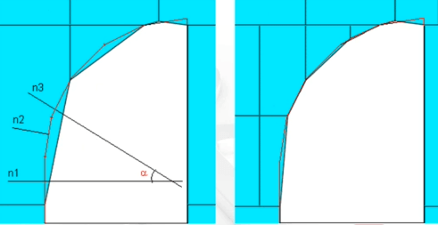
公差细化
公差细化定义网格多边形接近表面的程度制。细化的固体尺寸进行更多的控细化等级设置一个网格细化为多少倍，以满足要求。
标准控制网格多边形的精度-表面拟合如果右图中的”h”值大于公差标准，网格会进行细化。
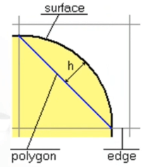
狭长通道细化
狭长通道网格细化：(Narrow通过使用channels)页你可以在模型的流动通道内定义额外的网格，以便获得更为精确的结果，
默认情况下在狭长通道内的网格细化总会进行。
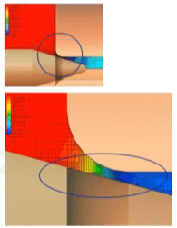
最小壁面厚度
影响模型壁面内的网格细化
自动生成的最小壁面厚度取决于模型尺寸、计算域、体积热源、初始条件、表面热源和表面目标。.
最小壁面厚度条件将导致 Flow Simulation 创建每个指定最小壁面厚度包含两个网格（两个网格足够解析一个壁面）的基本网格（不管是否已 指定初始网格级别）。
如果最小壁面厚度大于等于最小缝隙尺寸，则最小壁面厚度不会影响网格的生成。
如果模型的壁面或固体伸展部分的厚度小于最小壁面厚度和最小缝隙 尺寸时，固体壁面（两侧都接触流体）将得不到正确的解析解（例如，固体会被流体代替）。
可以将最小壁面厚度值链接到特征尺寸或参考尺寸，从而使最小壁面厚度值等于该尺寸。.
更改尺寸值会使最小壁面厚度值也改变。
最小缝隙尺寸
影响按初始网格解析模型狭长通道的过程
自动生成的最小缝隙尺寸取决于模型尺寸、计算域、体积热源、初始条件和边界条件。.
如果模型具有小于最小缝隙尺寸的缝隙，那么在计算过程中无法考虑
该缝隙（例如，流体不会通过该缝隙或缝隙可能变得更小或更大）。
默认情况下，Flow Simulation 会生成基本网格，以便每个指定的最小缝隙尺寸最少包含两个网格。
每最小缝隙尺寸的网格数非线性取决于初始网格的级别，且不能小于2。
可以将最小缝隙尺寸值链接到特征尺寸或参考尺寸，从而使最小缝隙尺寸值等于该尺寸。.
更改尺寸值会使最小缝隙尺寸值也改变。
模型精度
Flow Simulation 采用整体模型尺寸、计算域以及在其上指定条件和目标的面的有关信息，来计算默认的最小缝隙尺寸和最小壁面厚度。但这可能不足以识别相对较小的缝隙，这可能会造成结果不准确
在此情况下，必须手动指定最小缝隙尺寸和最小壁面厚度。
模型精度用于指定最小缝隙尺寸和最小壁面厚度以标识
Flow Simulation 无法自动识别的小型模型。
这些设置会影响特征网格的大小，并与结果精度一起控
制计算网格中生成的总网格数量。